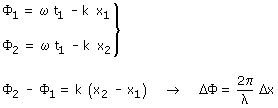
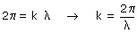

Fase espacial Considera una onda de fase: ωt - kx En un instante t1 esta fase valdrá: ωt1 - kx La fase de la onda particularizada para un instante se denomina fase espacial Se denomina diferencia de fase entre dos puntos a la diferencia de las correspondientes fases espaciales:  (Observa que la relación entre la separación de los puntos y la diferencia de fase es lineal lo cual significa que se pueden usar reglas de tres) Se denomina longitud de onda (λ) a la separación que debe haber entre dos puntos para que la diferencia de fase sea 2π (Entonces los valores de la perturbación serán los mismos en los dos puntos):  |